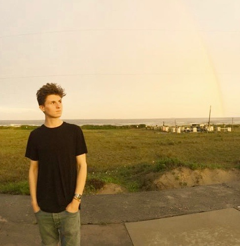

About Me
Welcome to my portfolio site! Here you can find several projects I’m particularly proud of. I am currently enrolled in the Trilogy Coding Bootcamp at the Harvard Extension School, and will graduate in March 2020. I worked at InResonance Software, a company headquartered near my home in the Pioneer Valley, between 2016 and 2017. After graduating high school, I attended Hampshire College for two semesters before taking a leave of absence to travel and discover what I was meant to do. That process is ongoing, but currently has found me driving to and from Cambridge to complete the bootcamp. Some of the most fulfilling work I’ve done in my life involved coding, from senior year of high school when I taught myself Python and PHP, to my job at iR, to the work that I’ve done during the bootcamp (shown on the portfolio page).
Other important areas of my life are running and visual art. I had my first show over the summer.